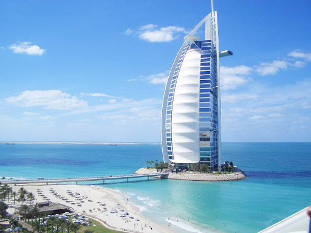

Dubaï
Dubaï
Dubaï est une ville et un émirat des Émirats arabes unis réputé pour son shopping de luxe, son architecture ultramoderne et sa vie nocturne animée. La Burj Khalifa, tour de 830 mètres de haut, domine le paysage urbain parsemé de gratte-ciel. À son pied, la fontaine de Dubaï présente des jets et des lumières synchronisés avec de la musique. Atlantis, The Palm est un hôtel comprenant parcs aquatiques avec animaux marins situé au large, sur des îles artificielles. Dubaï, rarement Doubaï[Note 1] (en arabe : دبي / Dubayy, /dʊ.ˈbajj/) est la première ville des Émirats arabes unis (devant la capitale fédérale Abou Dabi). Située sur le golfe Persique, elle est capitale de l'émirat de Dubaï, et compte plus de trois millions d'habitants. Elle forme, avec les villes de Charjah, Ajman et Oumm al Qaïwaïn, elles-mêmes capitales de leurs émirats respectifs, une agglomération qui dépasse 3,1 millions d'habitants en 2018. Dubaï est également le premier port du pays.
Le Burj Khalifa
On ne la présente plus. En symbole des plateformes d’observation, Burj Khalifa héberge à son 124ème étage « At The Top » : un point de vue spectaculaire, très prisé par les visiteurs (pensez au billet coupe file pour éviter les longues files d’attente). Véritable prouesse d’ingénierie, cette tour qui donne l’impression de percer le ciel a été élue plus haut bâtiment du monde (pour l’instant) avec 828 mètres de hauteur (soit plus de 2,5 fois la Tour Eiffel). Achevée en seulement six ans, elle illustre aujourd’hui la volonté de Dubaï d’atteindre de nouveaux sommets !Le Burj al-Arab
Le Burj al-Arab (برج العرب « Tour des Arabes » en arabe) est un hôtel proclamé "sept étoiles" par certains journalistes[1], situé à Dubaï, aux Émirats arabes unis. Mesurant 321 mètres, il était, jusqu’en 2007, l'édifice utilisé exclusivement comme un hôtel le plus élevé (le plus haut est désormais le JW Marriott Marquis, également à Dubaï). Il est particulièrement reconnaissable à sa forme de voile géante. Conçu en 1993 par l’architecte Tom Wright[2], il est construit sur une île artificielle du golfe Persique.

Dubai Aquarium & Underwater Zoo
L'aquarium et le zoo sous-marin de Dubaï abritent des milliers d'animaux aquatiques, comprenant plus de 140 espèces. Plus de 400 requins et raies vivent dans notre réservoir de 10 millions de litres, y compris des requins tigres de sable, des mérous géants et une foule d'autres espèces marines. Une série d'expériences soigneusement conçues permettra à nos visiteurs de se retrouver face à face avec nos résidents aquatiques pour des moments mémorables entre amis et en famille.
Le marché d’or
Visiter Dubaï sans passer par ses richesses à proprement parler est pour ainsi dire, impensable. Au delà des hôtels, boutiques et attractions démesurés, la ville héberge le plus grand marché d’Or… au monde ! Toujours à Deïra, profitez de votre balade pour découvrir ce lieu unique et surtout authentique où passionnés, curieux, locaux et touristes marchandent l’opulence avec une marchandise oscillant entre 18 et 22 carats. Cette même marchandise qui est d’ailleurs scrupuleusement approuvée par l’Etat avant sa mise en vente, de façon à authentifier les achats. Si l’or a la main mise, les pierres précieuses, l’argent mais aussi le diamant se sont fait une place sur les stands du marché, l’habillant un peu plus d’abondance.